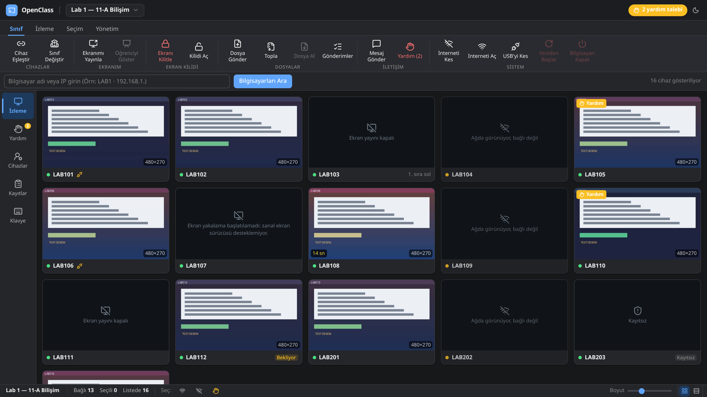
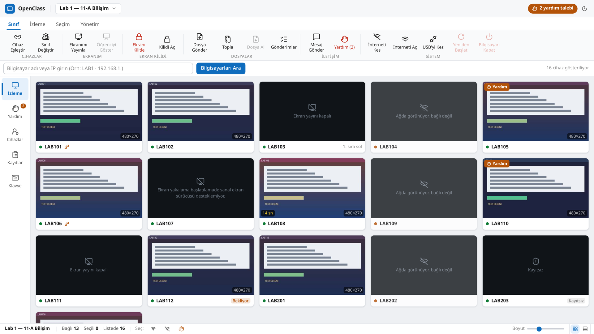
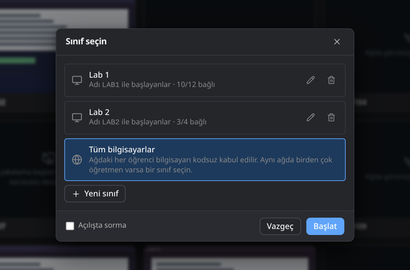
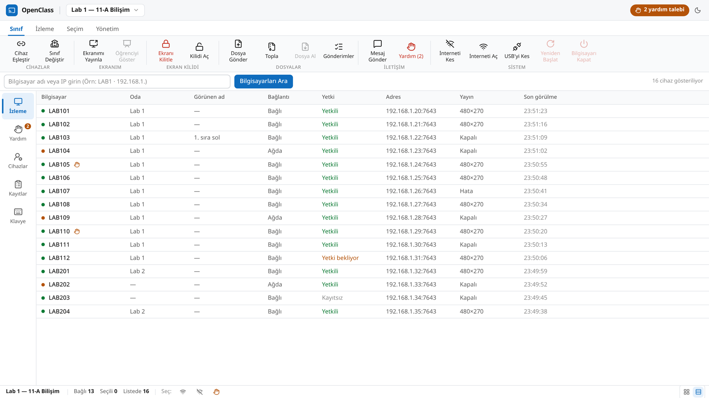

OpenClass, NetSupport School'a ücretsiz ve açık kaynak bir alternatif. Öğretmen, yerel ağdaki öğrenci bilgisayarlarını tek pencereden izler ve yönetir.


20 saniyede OpenClass
Özellikler
İki küçük program: öğretmen konsolu ve öğrenci ajanı. Yerel ağda birbirini bulur, şifreli bağlanır.
Bütün öğrenci ekranları küçük resim olarak tek pencerede; çift tıkla büyütün.
Kendi ekranınızı bütün sınıfa gösterin; pencereli ya da tam ekran.
Seçtiğiniz öğrencinin ekranını diğer öğrencilere yansıtın.
Gerektiğinde öğrencinin faresini ve klavyesini siz kullanın.
Tek tıkla klavye ve fareyi kilitleyin; dikkat sizde olsun.
Ders dosyalarını dağıtın, sınav sonunda herkesin dosyasını tek seferde toplayın.
Öğrencinin internete çıkışını kapatın; öğretmen bağlantısı açık kalır.
USB bellekleri kapatın. Klavye ve fare etkilenmez; bağlantı kopunca kendiliğinden açılır.
Öğrencinin o anki ekranını tek tıkla dosyaya kaydedin.
Sınıfa mesaj gönderin; öğrenci tek tıkla sizden yardım istesin.
Öğrenci bilgisayarını uzaktan kapatın ya da yeniden başlatın.
Her cihazın kendi kimliği var; bağlantılar TLS ile şifrelenir.
Sınıf seçimi
Konsol açılınca hangi sınıfla çalışacağınızı sorar. Gerisini bilgisayar adları halleder.
LAB1 sınıfını seçin; LAB101, LAB102… kendiliğinden bağlanır.BIL101, PC-01 ya da oda adı; ölçütü siz belirlersiniz.
Kurulum
Sunucu kurulumu, hesap ya da lisans anahtarı yok. Her şey okulun kendi ağında kalır.
Güvenlik duvarı sorarsa özel ağlarda izin verin, ardından sınıfınızı seçin.
Her öğrenci bilgisayarına bir kez. Ajan Windows açılışında kendiliğinden başlar.
Sınıfınıza uyan bilgisayarlar bağlanır; ekranlar konsola gelir.
Arayüz

Görüntüler geliştirme için kullanılan örnek veriyle alınmıştır; gerçek öğrenci ekranı değildir.
Öğretmen ve öğrenci programlarını birlikte güncelleyin.
Kurulumsuz sürüm WebView2 gerektirir; Windows 11'de hazırdır. Windows 10'da açılmazsa kurulum paketini kullanın.